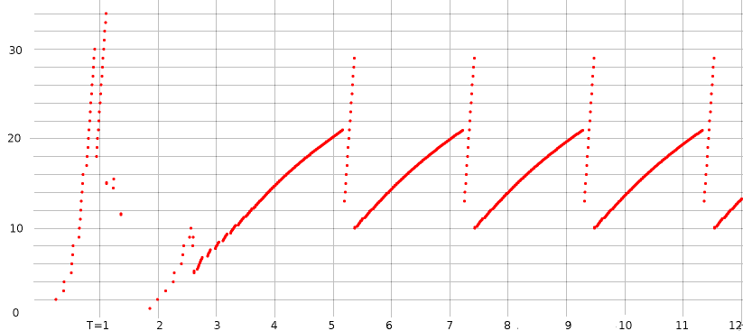
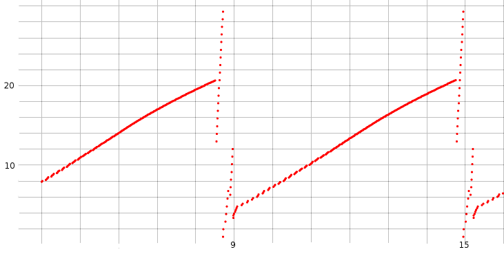
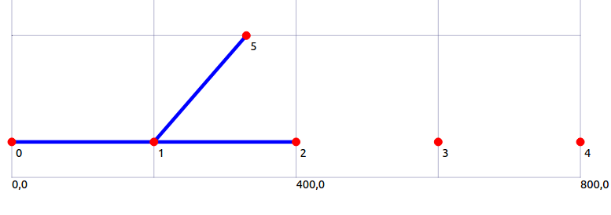

32 The ns-3 Network Simulator¶
In this chapter we take a somewhat cursory look at the ns-3 simulator, intended as a replacement for ns-2. The project is managed by the NS-3 Consortium, and all materials are available at www.nsnam.org.
Ns-3 represents a rather sharp break from ns-2. Gone is the Tcl programming interface; instead, ns-3 simulation programs are written in the C++ language, with extensive calls to the ns-3 library, although they are often still referred to as simulation “scripts”. As the simulator core itself is also written in C++, this in some cases allows improved interaction between configuration and execution. However, configuration and execution are still in most cases quite separate: at the end of the simulation script comes a call Simulator::Run() – akin to ns-2’s $ns run – at which point the user-written C++ has done its job and the library takes over.
To configure a simple simulation, an ns-2 Tcl script had to create nodes and links, create network-connection “agents” attached to nodes, and create traffic-generating applications attached to agents. Much the same applies to ns-3, but in addition each node must be configured with its network interfaces, and each network interface must be assigned an IP address.
32.1 Installing and Running ns-3¶
We here outline the steps for installing ns-3 under Linux from the “allinone” tar file, assuming that all prerequisite packages (such as gcc) are already in place. Much more general installation instructions can be found at www.nsnam.org. In particular, serious users are likely to want to download the current Mercurial repository directly. Information is also available for Windows and Macintosh installation, although perhaps the simplest option for Windows users is to run ns-3 in a Linux virtual machine.
The first step is to unzip the tar file; this should leave a directory named ns-allinone-3.nn, where nn reflects the version number (20 in the author’s installation as of this 2014 writing). This directory is the root of the ns-3 system; it contains a build.py (python) script and the primary ns-3 directory ns-3.nn. All that is necessary is to run the build.py script:
./build.py
Considerable configuration and then compiler output should ensue, hopefully terminating with a list of “Modules built” and “Modules not built”.
From this point on, most ns-3 work will take place in the subdirectory ns-3.nn, that is, in ns-allinone-3.nn/ns-3.nn. This development directory contains the source directory src, the script directory scratch, and the execution script waf.
The development directory also contains a directory examples containing a rich set of example scripts. The scripts in examples/tutorial are described in depth in the ns-3 tutorial in doc/tutorial.
32.1.1 Running a Script¶
Let us now run a script, for example, the file first.cc included in the examples/tutorial directory. We first copy this file into the directory “scratch”, and then, in the parent development directory, enter the command
./waf --run first
The program is compiled and, if compilation is successful, is run.
In fact, every uncompiled program in the scratch directory is compiled, meaning that projects in progress that are not yet compilable must be kept elsewhere. One convenient strategy is to maintain multiple project directories, and link them symbolically to scratch as needed.
The ns-3 system includes support for command-line options; the following example illustrates the passing by command line of the value 3 for the variable nCsma:
./waf --run "second --nCsma=3"
32.1.2 Compilation Errors¶
By default, ns-3 enables the -Werror option to the compiler, meaning that all warnings are treated as errors. This is good practice for contributed or published scripts, but can be rather exasperating for beginners. To disable this, edit the file waf-tools/cflags.py (relative to the development directory). Change the line
self.warnings_flags = [['-Wall'], ['-Werror'], ['-Wextra']]
to
self.warnings_flags = [['-Wall'], ['-Wextra']]
Then, in the development directory, run
./waf configure
./waf build
32.2 A Single TCP Sender¶
We begin by translating the single-TCP-sender script of 31.2 A Single TCP Sender. The full program is in basic1.cc; we now review most of it line-by-line; some standard things such as #include directives are omitted.
/*
Network topology:
A----R----B
A--R: 10 Mbps / 10 ms delay
R--B: 800 kbps / 50 ms delay
queue at R: size 7
*/
using namespace ns3;
std::string fileNameRoot = "basic1"; // base name for trace files, etc
void CwndChange (Ptr<OutputStreamWrapper> stream, uint32_t oldCwnd, uint32_t newCwnd)
{
*stream->GetStream () << Simulator::Now ().GetSeconds () << " " << newCwnd << std::endl;
}
static void
TraceCwnd () // Trace changes to the congestion window
{
AsciiTraceHelper ascii;
Ptr<OutputStreamWrapper> stream = ascii.CreateFileStream (fileNameRoot + ".cwnd");
Config::ConnectWithoutContext ("/NodeList/0/$ns3::TcpL4Protocol/SocketList/0/CongestionWindow", MakeBoundCallback (&CwndChange,stream));
}
The function TraceCwnd() arranges for tracing of cwnd; the function CwndChange is a callback, invoked by the ns-3 system whenever cwnd changes. Such callbacks are common in ns-3.
The parameter string beginning /NodeList/0/... is an example of the configuration namespace. Each ns-3 attribute can be accessed this way. See 32.2.2 The Ascii Tracefile below.
int main (int argc, char *argv[])
{
int tcpSegmentSize = 1000;
Config::SetDefault ("ns3::TcpSocket::SegmentSize", UintegerValue (tcpSegmentSize));
Config::SetDefault ("ns3::TcpSocket::DelAckCount", UintegerValue (0));
Config::SetDefault ("ns3::TcpL4Protocol::SocketType", StringValue ("ns3::TcpReno"));
Config::SetDefault ("ns3::RttEstimator::MinRTO", TimeValue (MilliSeconds (500)));
The use of Config::SetDefault() allows us to configure objects that will not exist until some later point, perhaps not until the ns-3 simulator is running. The first parameter is an attribute string, of the form ns3::class::attribute. A partial list of attributes is at https://www.nsnam.org/docs/release/3.19/doxygen/group___attribute_list.html. Attributes of a class can also be determined by a command such as the following:
./waf --run "basic1 --PrintAttributes=ns3::TcpSocket
The advantage of the Config::SetDefault mechanism is that often objects are created indirectly, perhaps by “helper” classes, and so direct setting of class properties can be problematic.
It is perfectly acceptable to issue some Config::SetDefault calls, then create some objects (perhaps implicitly), and then change the defaults (again with Config::SetDefault) for creation of additional objects.
We pick the TCP congesion-control algorithm by setting ns3::TcpL4Protocol::SocketType. Options are TcpRfc793 (no congestion control), TcpTahoe, TcpReno, TcpNewReno and TcpWestwood. TCP Cubic and SACK TCP are not supported natively (though they are available if the Network Simulation Cradle is installed).
Setting the DelAckCount attribute to 0 disables delayed ACKs. Setting the MinRTO value to 500 ms avoids some unexpected hard timeouts. We will return to both of these below in 32.2.3 Unexpected Timeouts and Other Phenomena.
Next comes our local variables and command-line-option processing. In ns-3 the latter is handled via the CommandLine object, which also recognized the --PrintAttributes option above. Using the --PrintHelp option gives a list of variables that can be set via command-line arguments.
unsigned int runtime = 20; // seconds
int delayAR = 10; // ms
int delayRB = 50; // ms
double bottleneckBW= 0.8; // Mbps
double fastBW = 10; // Mbps
uint32_t queuesize = 7;
uint32_t maxBytes = 0; // 0 means "unlimited"
CommandLine cmd;
// Here, we define command line options overriding some of the above.
cmd.AddValue ("runtime", "How long the applications should send data", runtime);
cmd.AddValue ("delayRB", "Delay on the R--B link, in ms", delayRB);
cmd.AddValue ("queuesize", "queue size at R", queuesize);
cmd.AddValue ("tcpSegmentSize", "TCP segment size", tcpSegmentSize);
cmd.Parse (argc, argv);
std::cout << "queuesize=" << queuesize << ", delayRB=" << delayRB << std::endl;
Next we create three nodes, illustrating the use of smart pointers and CreateObject().
Ptr<Node> A = CreateObject<Node> ();
Ptr<Node> R = CreateObject<Node> ();
Ptr<Node> B = CreateObject<Node> ();
Class Ptr is a “smart pointer” that manages memory through reference counting. The template function CreateObject acts as the ns-3 preferred alternative to operator new. Parameters for objects created this way can be supplied via Config::SetDefault, or by some later method call applied to the Ptr object. For Node objects, for example, we might call A -> AddDevice(...).
A convenient alternative to creating nodes individually is to create a container of nodes all at once:
NodeContainer allNodes;
allNodes.Create(3);
Ptr<Node> A = allNodes.Get(0);
...
After the nodes are in place we create our point-to-point links, using the PointToPointHelper class. We also create NetDeviceContainer objects; we don’t use these here (we could simply call AR.Install(A,R)), but will need them below when assigning IPv4 addresses.
// use PointToPointChannel and PointToPointNetDevice
NetDeviceContainer devAR, devRB;
PointToPointHelper AR, RB;
// create point-to-point link from A to R
AR.SetDeviceAttribute ("DataRate", DataRateValue (DataRate (fastBW * 1000 * 1000)));
AR.SetChannelAttribute ("Delay", TimeValue (MilliSeconds (delayAR)));
devAR = AR.Install(A, R);
// create point-to-point link from R to B
RB.SetDeviceAttribute ("DataRate", DataRateValue (DataRate (bottleneckBW * 1000 * 1000)));
RB.SetChannelAttribute ("Delay", TimeValue (MilliSeconds (delayRB)));
RB.SetQueue("ns3::DropTailQueue", "MaxPackets", UintegerValue(queuesize));
devRB = RB.Install(R,B);
Next we hand out IPv4 addresses. The Ipv4AddressHelper class can help us with individual LANs (eg A–R and R–B), but it is up to us to make sure our two LANs are on different subnets. If we attempt to put A and B on the same subnet, routing will simply fail, just as it would if we were to do this with real network nodes.
InternetStackHelper internet;
internet.Install (A);
internet.Install (R);
internet.Install (B);
// Assign IP addresses
Ipv4AddressHelper ipv4;
ipv4.SetBase ("10.0.0.0", "255.255.255.0");
Ipv4InterfaceContainer ipv4Interfaces;
ipv4Interfaces.Add (ipv4.Assign (devAR));
ipv4.SetBase ("10.0.1.0", "255.255.255.0");
ipv4Interfaces.Add (ipv4.Assign(devRB));
Ipv4GlobalRoutingHelper::PopulateRoutingTables ();
Next we print out the addresses assigned. This gives us a peek at the GetObject template and the ns-3 object-aggregation model. The original Node objects we created earlier were quite generic; they gained their Ipv4 component in the code above. Now we retrieve that component with the GetObject<Ipv4>() calls below.
Ptr<Ipv4> A4 = A->GetObject<Ipv4>(); // gets node A's IPv4 subsystem
Ptr<Ipv4> B4 = B->GetObject<Ipv4>();
Ptr<Ipv4> R4 = R->GetObject<Ipv4>();
Ipv4Address Aaddr = A4->GetAddress(1,0).GetLocal();
Ipv4Address Baddr = B4->GetAddress(1,0).GetLocal();
Ipv4Address Raddr = R4->GetAddress(1,0).GetLocal();
std::cout << "A's address: " << Aaddr << std::endl;
std::cout << "B's address: " << Baddr << std::endl;
std::cout << "R's #1 address: " << Raddr << std::endl;
std::cout << "R's #2 address: " << R4->GetAddress(2,0).GetLocal() << std::endl;
In general, A->GetObject<T> returns the component of type T that has been “aggregated” to Ptr<Object> A; often this aggregation is invisible to the script programmer but an understanding of how it works is sometimes useful. The aggregation is handled by the ns-3 Object class, which contains an internal list m_aggregates of aggregated companion objects. At most one object of a given type can be aggregated to another, making GetObject<T> unambiguous. Given a Ptr<Object> A, we can obtain an iterator over the aggregated companions via A->GetAggregateIterator(), of type Object::AggregateIterator. From each Ptr<const Object> B returned by this iterator, we can call B->GetInstanceTypeId().GetName() to get the class name of B.
The GetAddress() calls take two parameters; the first specfies the interface (a value of 0 gives the loopback interface) and the second distinguishes between multiple addresses assigned to the same interface (which is not happening here). The call A4->GetAddress(1,0) returns an Ipv4InterfaceAddress object containing, among other things, an IP address, a broadcast address and a netmask; GetLocal() returns the first of these.
Next we create the receiver on B, using a PacketSinkHelper. A receiver is, in essense, a read-only form of an application server.
// create a sink on B
uint16_t Bport = 80;
Address sinkAaddr(InetSocketAddress (Ipv4Address::GetAny (), Bport));
PacketSinkHelper sinkA ("ns3::TcpSocketFactory", sinkAaddr);
ApplicationContainer sinkAppA = sinkA.Install (B);
sinkAppA.Start (Seconds (0.01));
// the following means the receiver will run 1 min longer than the sender app.
sinkAppA.Stop (Seconds (runtime + 60.0));
Address sinkAddr(InetSocketAddress(Baddr, Bport));
Now comes the sending application, on A. We must configure and create a BulkSendApplication, attach it to A, and arrange for a connection to be created to B. The BulkSendHelper class simplifies this.
BulkSendHelper sourceAhelper ("ns3::TcpSocketFactory", sinkAddr);
sourceAhelper.SetAttribute ("MaxBytes", UintegerValue (maxBytes));
sourceAhelper.SetAttribute ("SendSize", UintegerValue (tcpSegmentSize));
ApplicationContainer sourceAppsA = sourceAhelper.Install (A);
sourceAppsA.Start (Seconds (0.0));
sourceAppsA.Stop (Seconds (runtime));
If we did not want to use the helper class here, the easiest way to create the BulkSendApplication is with an ObjectFactory. We configure the factory with the type we want to create and the relevant configuration parameters, and then call factory.Create(). (We could have used the Config::SetDefault() mechanism and CreateObject() as well.)
ObjectFactory factory;
factory.SetTypeId ("ns3::BulkSendApplication");
factory.Set ("Protocol", StringValue ("ns3::TcpSocketFactory"));
factory.Set ("MaxBytes", UintegerValue (maxBytes));
factory.Set ("SendSize", UintegerValue (tcpSegmentSize));
factory.Set ("Remote", AddressValue (sinkAddr));
Ptr<Object> bulkSendAppObj = factory.Create();
Ptr<Application> bulkSendApp = bulkSendAppObj -> GetObject<Application>();
bulkSendApp->SetStartTime(Seconds(0.0));
bulkSendApp->SetStopTime(Seconds(runtime));
A->AddApplication(bulkSendApp);
The above gives us no direct access to the actual TCP connection. Yet another alternative is to start by creating the TCP socket and connecting it:
Ptr<Socket> tcpsock = Socket::CreateSocket (A, TcpSocketFactory::GetTypeId ());
tcpsock->Bind();
tcpsock->Connect(sinkAddr);
However, there is then no mechanism for creating a BulkSendApplication that uses a pre-existing socket. (For a workaround, see the tutorial example fifth.cc.)
Before beginning execution, we set up tracing; we will look at the tracefile format later. We use the AR PointToPointHelper class here, but both ascii and pcap tracing apply to the entire A–R–B network.
// Set up tracing
AsciiTraceHelper ascii;
std::string tfname = fileNameRoot + ".tr";
AR.EnableAsciiAll (ascii.CreateFileStream (tfname));
// Setup tracing for cwnd
Simulator::Schedule(Seconds(0.01),&TraceCwnd); // this Time cannot be 0.0
// This tells ns-3 to generate pcap traces, including "-node#-dev#-" in filename
AR.EnablePcapAll (fileNameRoot); // ".pcap" suffix is added automatically
This last creates four .pcap files, eg
basic1-0-0.pcapbasic1-1-0.pcapbasic1-1-1.pcapbasic1-2-0.pcap
The first number refers to the node (A=0, R=1, B=2) and the second to the interface. A packet arriving at R but dropped there will appear in the second .pcap file but not the third. These files can be viewed with WireShark.
Finally we are ready to start the simulator! The BulkSendApplication will stop at time runtime, but traffic may be in progress. We allow it an additional 60 seconds to clear. We also, after the simulation has run, print out the number of bytes received by B.
Simulator::Stop (Seconds (runtime+60));
Simulator::Run ();
Ptr<PacketSink> sink1 = DynamicCast<PacketSink> (sinkAppA.Get (0));
std::cout << "Total Bytes Received from A: " << sink1->GetTotalRx () << std::endl;
return 0;
}
32.2.1 Running the Script¶
When we run the script and plot the cwnd trace data (here for about 12 seconds), we get the following:

Compare this graph to that in 31.2.1 Graph of cwnd v time produced by ns-2. The slow-start phase earlier ended at around 2.0 and now ends closer to 3.0. There are several modest differences, including the halving of cwnd just before T=1 and the peak around T=2.6; these were not apparent in the ns-2 graph.
After slow-start is over, the graphs are quite similar; cwnd ranges from 10 to 21. The period before was 1.946 seconds; here it is 2.0548; the difference is likely due to a more accurate implementation of the recovery algorithm.
One striking difference is the presence of the near-vertical line of dots just after each peak. What is happening here is that ns-3 implements the cwnd inflation/deflation algorithm outlined at the tail end of 19.4 TCP Reno and Fast Recovery. When three dupACKs are received, cwnd is set to cwnd/2 + 3, and is then allowed to increase to 1.5×cwnd. See the end of 19.4 TCP Reno and Fast Recovery.
32.2.2 The Ascii Tracefile¶
Below are four lines from the tracefile, starting with the record showing packet 271 (Seq=271001) being dropped by R.
d 4.9823 /NodeList/1/DeviceList/1/$ns3::PointToPointNetDevice/TxQueue/Drop ns3::PppHeader (Point-to-Point Protocol: IP (0x0021)) ns3::Ipv4Header (tos 0x0 DSCP Default ECN Not-ECT ttl 63 id 296 protocol 6 offset (bytes) 0 flags [none] length: 1040 10.0.0.1 > 10.0.1.2) ns3::TcpHeader (49153 > 80 [ ACK ] Seq=271001 Ack=1 Win=65535) Payload (size=1000)
r 4.98312 /NodeList/2/DeviceList/0/$ns3::PointToPointNetDevice/MacRx ns3::Ipv4Header (tos 0x0 DSCP Default ECN Not-ECT ttl 63 id 283 protocol 6 offset (bytes) 0 flags [none] length: 1040 10.0.0.1 > 10.0.1.2) ns3::TcpHeader (49153 > 80 [ ACK ] Seq=258001 Ack=1 Win=65535) Payload (size=1000)
+ 4.98312 /NodeList/2/DeviceList/0/$ns3::PointToPointNetDevice/TxQueue/Enqueue ns3::PppHeader (Point-to-Point Protocol: IP (0x0021)) ns3::Ipv4Header (tos 0x0 DSCP Default ECN Not-ECT ttl 64 id 271 protocol 6 offset (bytes) 0 flags [none] length: 40 10.0.1.2 > 10.0.0.1) ns3::TcpHeader (80 > 49153 [ ACK ] Seq=1 Ack=259001 Win=65535)
- 4.98312 /NodeList/2/DeviceList/0/$ns3::PointToPointNetDevice/TxQueue/Dequeue ns3::PppHeader (Point-to-Point Protocol: IP (0x0021)) ns3::Ipv4Header (tos 0x0 DSCP Default ECN Not-ECT ttl 64 id 271 protocol 6 offset (bytes) 0 flags [none] length: 40 10.0.1.2 > 10.0.0.1) ns3::TcpHeader (80 > 49153 [ ACK ] Seq=1 Ack=259001 Win=65535)
As with ns-2, the first letter indicates the action: r for received, d for dropped, + for enqueued, - for dequeued. For Wi-Fi tracefiles, t is for transmitted. The second field represents the time.
The third field represents the name of the event in the configuration namespace, sometimes called the configuration path name. The NodeList value represents the node (A=0, etc), the DeviceList represents the interface, and the final part of the name repeats the action: Drop, MacRx, Enqueue, Dequeue.
After that come a series of class names (eg ns3::Ipv4Header, ns3::TcpHeader), from the ns-3 attribute system, followed in each case by a parenthesized list of class-specific trace information.
In the output above, the final three records all refer to node B (/NodeList/2/). Packet 258 has just arrived (Seq=258001), and ACK 259001 is then enqueued and sent.
32.2.3 Unexpected Timeouts and Other Phenomena¶
In the discussion of the script above at 32.2 A Single TCP Sender we mentioned that we set ns3::TcpSocket::DelAckCount to 0, to disable delayed ACKs, and ns3::RttEstimator::MinRTO to 500 ms, to avoid unexpected timeouts.
If we comment out the line disabling delayed ACKs, little changes in our graph, except that the spacing between consecutive TCP teeth now almost doubles to 3.776. This is because with delayed ACKs the receiver sends only half as many ACKs, and the sender does not take this into account when incrementing cwnd (that is, the sender does not implement the suggestion of RFC 3465 mentioned in 19.2.1 TCP Reno Per-ACK Responses).
If we leave out the MinRTO adjustment, and set tcpSegmentSize to 960, we get a more serious problem: the graph now looks something like this:

We can enable ns-3’s internal logging in the TcpReno class by entering the commands below, before running the script. (In some cases, as with WifiHelper::EnableLogComponents(), logging output can be enabled from within the script.) Once enabled, logging output is written to stderr.
NS_LOG=TcpReno=level_info
export NS_LOG
The log output shows the initial dupACK at 8.54:
8.54069 [node 0] Triple dupack. Reset cwnd to 12960, ssthresh to 10080
But then, despite Fast Recovery proceding normally, we get a hard timeout:
8.71463 [node 0] RTO. Reset cwnd to 960, ssthresh to 14400, restart from seqnum 510721
What is happening here is that the RTO interval was just a little too short, probably due to the use of the “awkward” segment size of 960.
After the timeout, there is another triple-dupACK!
8.90344 [node 0] Triple dupack. Reset cwnd to 6240, ssthresh to 3360
Shortly thereafter, at T=8.98, cwnd is reset to 3360, in accordance with the Fast Recovery rules.
The overall effect is that cwnd is reset, not to 10, but to about 3.4 (in packets). This significantly slows down throughput.
In recovering from the hard timeout, the sequence number is reset to Seq=510721 (packet 532), as this was the last packet acknowledged. Unfortunately, several later packets had in fact made it through to B. By looking at the tracefile, we can see that at T=8.7818, B received Seq=538561, or packet 561. Thus, when A begins retransmitting packets 533, 534, etc after the timeout, B’s response is to send the ACK the highest packet it has received, packet 561 (Ack=539521).
This scenario is not what the designers of Fast Recovery had in mind; it is likely triggered by a too-conservative timeout estimate. Still, exactly how to fix it is an interesting question; one approach might be to ignore, in Fast Recovery, triple dupACKs of packets now beyond what the sender is currently sending.
32.3 Wireless¶
We next present the wireless simulation of 31.6 Wireless Simulation. The full script is at wireless.cc; the animation output for the netanim player is at wireless.xml. As before, we have one mover node moving horizontally 150 meters above a row of five fixed nodes spaced 200 meters apart. The limit of transmission is set to be 250 meters, meaning that a fixed node goes out of range of the mover node just as the latter passes over directly above the next fixed node. As before, we use Ad hoc On-demand Distance Vector (AODV) as the routing protocol. When the mover passes over fixed node N, it goes out of range of fixed node N-1, at which point AODV finds a new route to mover through fixed node N.

As in ns-2, wireless simulations tend to require considerably more configuration than point-to-point simulations. We now review the source code line-by-line. We start with two callback functions and the global variables they will need to access.
using namespace ns3;
Ptr<ConstantVelocityMobilityModel> cvmm;
double position_interval = 1.0;
std::string tracebase = "scratch/wireless";
// two callbacks
void printPosition()
{
Vector thePos = cvmm->GetPosition();
Simulator::Schedule(Seconds(position_interval), &printPosition);
std::cout << "position: " << thePos << std::endl;
}
void stopMover()
{
cvmm -> SetVelocity(Vector(0,0,0));
}
Next comes the data rate:
int main (int argc, char *argv[])
{
std::string phyMode = "DsssRate1Mbps";
The phyMode string represents the Wi-Fi data rate (and modulation technique). DSSS rates are DsssRate1Mbps, DsssRate2Mbps, DsssRate5_5Mbps and DsssRate11Mbps. Also available are ErpOfdmRate constants to 54 Mbps and OfdmRate constants to 150 Mbps with a 40 MHz band-width (GetOfdmRate150MbpsBW40MHz). All these are defined in src/wifi/model/wifi-phy.cc.
Next are the variables that determine the layout and network behavior. The factor variable allows slowing down the speed of the mover node but correspondingly extending the runtime (though the new-route-discovery time is not scaled):
int bottomrow = 5; // number of bottom-row nodes
int spacing = 200; // between bottom-row nodes
int mheight = 150; // height of mover above bottom row
int brheight = 50; // height of bottom row
int X = (bottomrow-1)*spacing+1; // X is the horizontal dimension of the field
int packetsize = 500;
double factor = 1.0; // allows slowing down rate and extending runtime; same total # of packets
int endtime = (int)100*factor;
double speed = (X-1.0)/endtime;
double bitrate = 80*1000.0/factor; // *average* transmission rate, in bits/sec
uint32_t interval = 1000*packetsize*8/bitrate*1000; // in microsec
uint32_t packetcount = 1000000*endtime/ interval;
std::cout << "interval = " << interval <<", rate=" << bitrate << ", packetcount=" << packetcount << std::endl;
There are some niceties in calculating the packet transmission interval above; if we do it instead as 1000000*packetsize*8/bitrate then we sometimes run into 32-bit overflow problems or integer-division-roundoff problems.
Now we configure some Wi-Fi settings.
// disable fragmentation for frames below 2200 bytes
Config::SetDefault ("ns3::WifiRemoteStationManager::FragmentationThreshold", StringValue ("2200"));
// turn off RTS/CTS for frames below 2200 bytes
Config::SetDefault ("ns3::WifiRemoteStationManager::RtsCtsThreshold", StringValue ("2200"));
// Set non-unicast data rate to be the same as that of unicast
Config::SetDefault ("ns3::WifiRemoteStationManager::NonUnicastMode", StringValue (phyMode));
Here we create the mover node with CreateObject<Node>(), but the fixed nodes are created via a NodeContainer, as is more typical with larger simulations
// Create nodes
NodeContainer fixedpos;
fixedpos.Create(bottomrow);
Ptr<Node> lowerleft = fixedpos.Get(0);
Ptr<Node> mover = CreateObject<Node>();
Now we put together a set of “helper” objects for more Wi-Fi configuration. We must configure both the PHY (physical) and MAC layers.
// The below set of helpers will help us to put together the desired Wi-Fi behavior
WifiHelper wifi;
wifi.SetStandard (WIFI_PHY_STANDARD_80211b);
wifi.SetRemoteStationManager ("ns3::AarfWifiManager"); // Use AARF rate control
The AARF rate changes can be viewed by enabling the appropriate logging with, at the shell level before ./waf, NS_LOG=AarfWifiManager=level_debug. We are not otherwise interested in rate scaling (4.2.2 Dynamic Rate Scaling) here, though.
The PHY layer helper is YansWifiPhyHelper. The YANS project (Yet Another Network Simulator) was an influential precursor to ns-3; see [LH06]. Note the AddPropagationLoss configuration, where we set the Wi-Fi range to 250 meters. The MAC layer helper is NqosWifiMacHelper; the “nqos” means “no quality-of-service”, ie no use of Wi-Fi PCF (4.2.7 Wi-Fi Polling Mode).
// The PHY layer here is "yans"
YansWifiPhyHelper wifiPhyHelper = YansWifiPhyHelper::Default ();
// for .pcap tracing
// wifiPhyHelper.SetPcapDataLinkType (YansWifiPhyHelper::DLT_IEEE802_11_RADIO);
YansWifiChannelHelper wifiChannelHelper; // *not* ::Default() !
wifiChannelHelper.SetPropagationDelay ("ns3::ConstantSpeedPropagationDelayModel"); // pld: default?
// the following has an absolute cutoff at distance > 250
wifiChannelHelper.AddPropagationLoss ("ns3::RangePropagationLossModel", "MaxRange", DoubleValue(250));
Ptr<YansWifiChannel> pchan = wifiChannelHelper.Create ();
wifiPhyHelper.SetChannel (pchan);
// Add a non-QoS upper-MAC layer "AdhocWifiMac", and set rate control
NqosWifiMacHelper wifiMacHelper = NqosWifiMacHelper::Default ();
wifiMacHelper.SetType ("ns3::AdhocWifiMac");
NetDeviceContainer devices = wifi.Install (wifiPhyHelper, wifiMacHelper, fixedpos);
devices.Add (wifi.Install (wifiPhyHelper, wifiMacHelper, mover));
At this point the basic Wi-Fi configuration is done! The next step is to work on the positions and motion. First we establish the positions of the fixed nodes.
MobilityHelper sessile; // for fixed nodes
Ptr<ListPositionAllocator> positionAlloc = CreateObject<ListPositionAllocator> ();
int Xpos = 0;
for (int i=0; i<bottomrow; i++) {
positionAlloc->Add(Vector(Xpos, brheight, 0.0));
Xpos += spacing;
}
sessile.SetPositionAllocator (positionAlloc);
sessile.SetMobilityModel ("ns3::ConstantPositionMobilityModel");
sessile.Install (fixedpos);
Next we set up the mover node. ConstantVelocityMobilityModel is a subclass of MobilityModel. At the end we print out a couple things just for confirmation.
Vector pos (0, mheight+brheight, 0);
Vector vel (speed, 0, 0);
MobilityHelper mobile;
mobile.SetMobilityModel("ns3::ConstantVelocityMobilityModel"); // no Attributes
mobile.Install(mover);
cvmm = mover->GetObject<ConstantVelocityMobilityModel> ();
cvmm->SetPosition(pos);
cvmm->SetVelocity(vel);
std::cout << "position: " << cvmm->GetPosition() << " velocity: " << cvmm->GetVelocity() << std::endl;
std::cout << "mover mobility model: " << mobile.GetMobilityModelType() << std::endl;
Now we configure Ad hoc On-demand Distance Vector routing.
AodvHelper aodv;
OlsrHelper olsr;
Ipv4ListRoutingHelper listrouting;
//listrouting.Add(olsr, 10); // generates less traffic
listrouting.Add(aodv, 10); // fastest to find new routes
Uncommenting the olsr line (and commenting out the last line) is all that is necessary to change to OLSR routing. OLSR is slower to find new routes, but sends less traffic.
Now we set up the IP addresses. This is straightforward as all the nodes are on a single subnet.
InternetStackHelper internet;
internet.SetRoutingHelper(listrouting);
internet.Install (fixedpos);
internet.Install (mover);
Ipv4AddressHelper ipv4;
NS_LOG_INFO ("Assign IP Addresses.");
ipv4.SetBase ("10.1.1.0", "255.255.255.0"); // there is only one subnet
Ipv4InterfaceContainer i = ipv4.Assign (devices);
Now we create a receiving application UdpServer on node mover, and a sending application UdpClient on the lower-left node. These applications generate their own sequence numbers, which show up in the ns-3 tracefiles marked with ns3::SeqTsHeader. As in 32.2 A Single TCP Sender, we use Config::SetDefault() and CreateObject<>() to construct the applications.
uint16_t port = 80;
// create a receiving application (UdpServer) on node mover
Address sinkaddr(InetSocketAddress (Ipv4Address::GetAny (), port));
Config::SetDefault("ns3::UdpServer::Port", UintegerValue(port));
Ptr<UdpServer> UdpRecvApp = CreateObject<UdpServer>();
UdpRecvApp->SetStartTime(Seconds(0.0));
UdpRecvApp->SetStopTime(Seconds(endtime+60));
mover->AddApplication(UdpRecvApp);
Ptr<Ipv4> m4 = mover->GetObject<Ipv4>();
Ipv4Address Maddr = m4->GetAddress(1,0).GetLocal();
std::cout << "IPv4 address of mover: " << Maddr << std::endl;
Address moverAddress (InetSocketAddress (Maddr, port));
Here is the UdpClient sending application:
Config::SetDefault("ns3::UdpClient::MaxPackets", UintegerValue(packetcount));
Config::SetDefault("ns3::UdpClient::PacketSize", UintegerValue(packetsize));
Config::SetDefault("ns3::UdpClient::Interval", TimeValue (MicroSeconds (interval)));
Ptr<UdpClient> UdpSendApp = CreateObject<UdpClient>();
UdpSendApp -> SetRemote(Maddr, port);
UdpSendApp -> SetStartTime(Seconds(0.0));
UdpSendApp -> SetStopTime(Seconds(endtime));
lowerleft->AddApplication(UdpSendApp);
We now set up tracing. The first, commented-out line enables pcap-format tracing, which we do not need here. The YansWifiPhyHelper object supports tracing only of “receive” (r) and “transmit” (t) records; the PointtoPointHelper of 32.2 A Single TCP Sender also traced enqueue and drop records.
//wifiPhyHelper.EnablePcap (tracebase, devices);
AsciiTraceHelper ascii;
wifiPhyHelper.EnableAsciiAll (ascii.CreateFileStream (tracebase + ".tr"));
// create animation file, to be run with 'netanim'
AnimationInterface anim (tracebase + ".xml");
anim.SetMobilityPollInterval(Seconds(0.1));
If we view the animation with netanim, the moving node’s motion is clear. The mover node, however, sometimes appears to transmit back to both the fixed-row node below left and the fixed-row node below right. These transmissions represent the Wi-Fi link-layer ACKs; they appear to be sent to two fixed-row nodes because what netanim is actually displaying with its blue links is transmission every other node in range.
We can also “view” the motion in text format by uncommenting the first line below.
//Simulator::Schedule(Seconds(position_interval), &printPosition);
Simulator::Schedule(Seconds(endtime), &stopMover);
Finally it is time to run the simulator, and print some final output.
Simulator::Stop(Seconds (endtime+60));
Simulator::Run ();
Simulator::Destroy ();
int pktsRecd = UdpRecvApp->GetReceived();
std::cout << "packets received: " << pktsRecd << std::endl;
std::cout << "packets recorded as lost: " << (UdpRecvApp->GetLost()) << std::endl;
std::cout << "packets actually lost: " << (packetcount - pktsRecd) << std::endl;
return 0;
}
32.3.1 Tracefile Analysis¶
The tracefile provides no enqueue records, and Wi-Fi doesn’t have fixed links; how can we verify that packets are being forwarded correctly? One thing we can do with the tracefile is to look at each value of the UdpServer application sequence number, and record
- when it was received by node
mover - when it was transmitted by any fixed-row node
If we do this, we get output like the following:
packet 0 received at 0.0248642, forwarded by 0 at 0.0201597
packet 1 received at 0.0547045, forwarded by 0 at 0.05
...
packet 499 received at 24.9506, forwarded by 0 at 24.95
packet 500 NOT recd, forwarded by 0 at 25, forwarded by 0 at 25.0019, forwarded by 0 at 25.0035, forwarded by 0 at 25.0071, forwarded by 0 at 25.0097, forwarded by 0 at 25.0159, forwarded by 0 at 25.0281
packet 501 received at 25.0864, forwarded by 0 at 25.0767, forwarded by 1 at 25.0817
packet 502 received at 25.1098, forwarded by 0 at 25.1, forwarded by 1 at 25.1051
...
packet 1000 NOT recd, forwarded by 0 at 50, forwarded by 1 at 50.001, forwarded by 1 at 50.003, forwarded by 1 at 50.0059, forwarded by 1 at 50.0087, forwarded by 1 at 50.0151, forwarded by 1 at 50.0239, forwarded by 1 at 50.0341
packet 1001 received at 50.082, forwarded by 0 at 50.0683, forwarded by 1 at 50.0722, forwarded by 2 at 50.0773
packet 1002 received at 50.1107, forwarded by 0 at 50.1, forwarded by 1 at 50.101, forwarded by 2 at 50.106
...
packet 1499 received at 74.9525, forwarded by 0 at 74.95, forwarded by 1 at 74.951, forwarded by 2 at 74.9519
packet 1500 NOT recd, forwarded by 0 at 75, forwarded by 1 at 75.001, forwarded by 2 at 75.0019, forwarded by 2 at 75.0039, forwarded by 2 at 75.005, forwarded by 2 at 75.0084, forwarded by 2 at 75.0124, forwarded by 2 at 75.0277, forwarded by 2 at 75.0361
packet 1501 NOT recd, forwarded by 0 at 75.05
packet 1502 received at 75.1484, forwarded by 0 at 75.1287, forwarded by 1 at 75.1299, forwarded by 1 at 75.1314, forwarded by 1 at 75.1326, forwarded by 2 at 75.1386, forwarded by 3 at 75.1437
packet 1503 received at 75.1621, forwarded by 0 at 75.15, forwarded by 1 at 75.151, forwarded by 2 at 75.1523, forwarded by 3 at 75.1574
...
That is, packets 0-499 were transmitted only by node 0. Packet 500 was never received by mover, but there were seven transmission attempts; these seven attempts follow the rules described in 4.2.1 Wi-Fi and Collisions. Packets starting at 501 were transmitted by node 0 and then later by node 1. Similarly, packet 1000 was lost, and after that each packet arriving at mover was first transmitted by nodes 0, 1 and 2, in that order. In other words, packets are indeed being forwarded rightward along the line of fixed-row nodes until a node is reached that is in range of mover.
32.3.2 AODV Performance¶
If we change the line
listrouting.Add(aodv, 10);
to
listrouting.Add(dsdv, 10);
we find that the loss count goes from 4 packets out of 2000 to 398 out of 2000; for OLSR routing the loss count is 426. As we discussed in 31.6 Wireless Simulation, the loss of one data packet triggers the AODV implementation to look for a new route. The DSDV and OLSR implementations, on the other hand, only look for new routes at regularly spaced intervals.
32.4 Exercises¶
In preparation.